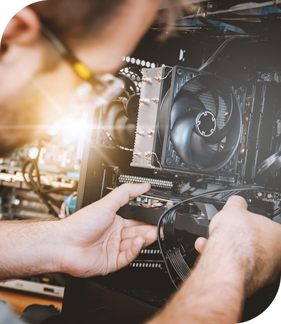
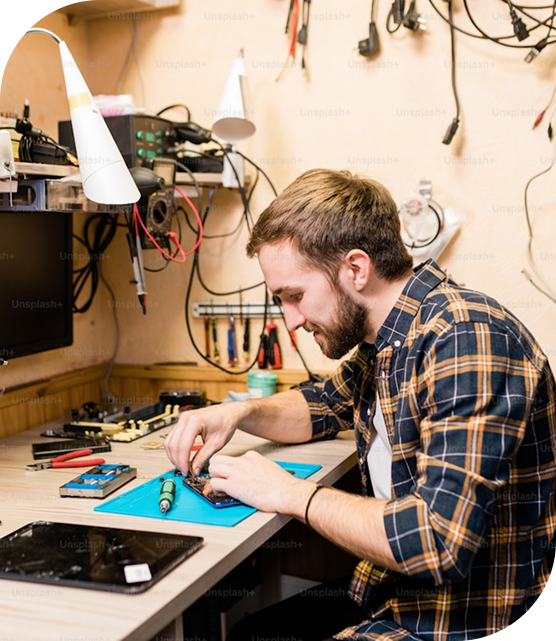

Formatage, le diagnostic et la configuration de PC fixes ou portables
Faites appel à Morefix pour la maintenance et l’entretien de votre ordinateur à ...............Nous nous occupons de la configuration personnalisée et de la récupération des données de votre PC. Vous pouvez bénéficier d’un diagnostic gratuit de votre outil informatique et obtenir ainsi un devis détaillé.
Nos services de réparation informatique
Nous sommes en mesure d’installer les logiciels et de paramétrer le système d’exploitation de votre PC. Confiez-nous la suppression des virus et le formatage de votre ordinateur. Nous résolvons les problèmes de chargement de batterie, d’allumage, de connectique et de lenteur de votre ordinateur fixe ou portable. Pour un changement d’écran de votre matériel informatique, nous sommes à votre service. Le déploiement de votre réseau à domicile figure aussi parmi nos prestations.

N'hésitez pas à nous contacter
Nous effectuons un diagnostic gratuit (niveau 1, sans démontage de l’appareil) et
établissons ainsi un devis pour la réparation de votre matériel informatique.
Si vous avez la moindre question sur les services de Morefix, appelez-nous au 04 77 57 17 38.
10 Rue de la Gare
42000 Saint-Etienne
04 77 57 17 38
Example@gmail.com
Assistance informatique et téléphonie dans la région de ..............
Où nous trouver pour la réparation informatique ?
Nous sommes situé au 10 Rue de la Gare, 42000 Saint-Etienne